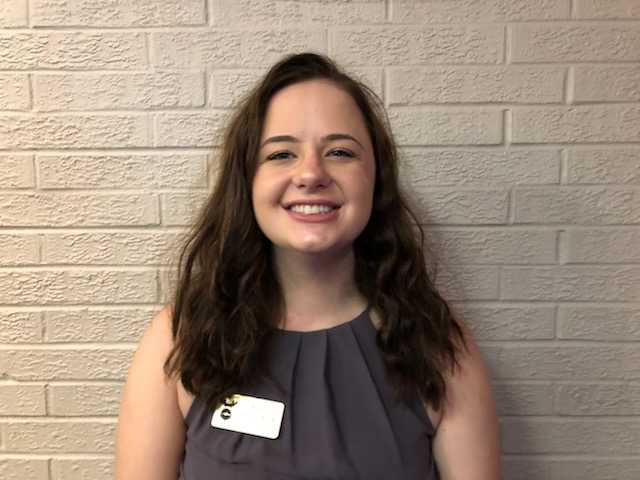

Our Mission
To foster a perpetual brotherhood of entrepreneurs and innovators dedicated to empowering one another and advancing society.
Leadership
Leadership
BK
President

ZF-TRW
Computer Engineering | May 2020
BK is from Ann Arbor, MI. He is a student entrepreneur who’s started a nonprofit consulting firm Wasta and founded Purdue’s first sustainability hackathon EcoMake. He is studying electrical engineering, and most recently, he was at ZF-TRW as a Hardware Engineering Intern.
Anoop Jain
Vice President, Development

Microsoft
Computer Science | May 2020
Anoop is a Computer Science student from San Jose, California. He works part-time for Autodesk during the school year and is heading to Microsoft for an internship this summer.
Rachel Dziewatkoski
Vice President, Membership

The Whiting-Turner Contracting Co.
Civil Engineering | May 2020
Rachel is from Wintersville, OH and is a junior in Civil Engineering with a concentration in Transportation. Last summer, she interned at The Whiting-Turner Contracting Company and plans to return there in the summer.
Atif Niyaz
Vice President, Brotherhood
Computer Engineering | May 2020
Atif is a junior from Carmel, IN studying Computer Engineering. He has worked in the Bay Area the last two summers at startups Gametime and Guidebook and will be joining Google next summer.
AJ Gregorian
Vice President, Finance
Northrop Grumman
Electrical Engineering | May 2020
AJ is from Wilmette Illinois. Most recently he was a hardware engineering intern at Northrop Grumman
Simran Bansal
Vice President, Marketing

Apple
User Experience Design | Fall 2020
Simran is a junior majoring in User Experience Design from San Jose, CA. She joined DMK because she enjoys being surrounded by the brothers who are passionate about entrepreneurship, and are a constant motivation in various aspects of life. She is passionate about startup culture, projects relating to Voice Commands and AR, and photography + videography.
Prithvi Prasanna
Vice President, Internal Affairs
Perceive Inc.
Computer Engineering | May 2020
Prithvi Prasanna is from Buffalo, New York. Most recently, he was at Perceive Inc. as Computer Engineering Intern
Some fun facts
More than 100,000 websites hosted
0
CMS Installation
0
Awards Won
0
Registered Domains
0
Satisfied Customers